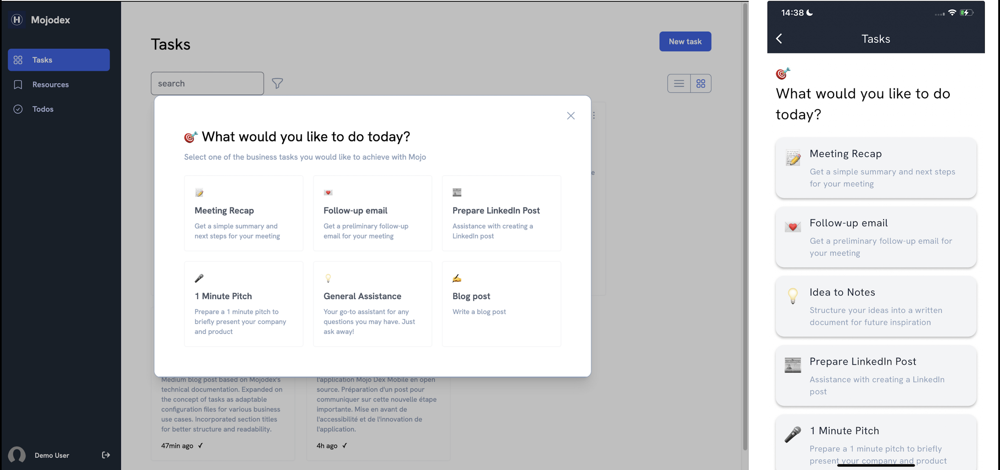

Overview
Mojodex is a digital assistant that supports professionals by automating text-related tasks.
🌟 Our motivation is to create the open standard on how to create enterprise level agents
What does it do?
What can companies do with Mojodex?
-
Recruitment Assistance
Custom Interview Recaps: Teams of 8-10 members use Mojodex to standardize their interview processes, ensuring consistent and well-structured interview summaries.
-
Sales Process Enhancement
On-the-Go Sales Support: Sales teams utilize Mojodex to streamline their workflow, capturing conversation details directly into their CRM while traveling between meetings.
-
Proprietary Consulting Assistants
Secure Customer Data Handling: Consulting teams create tailored assistants with Mojodex to manage sensitive customer information on their own secure infrastructure.
-
Customer Relationship Management
Guided Communication for Newcomers: Customer success teams employ digital assistants to mentor new members, leveraging internal data and established procedures from over 20 years of customer engagement in the sound factory industry.
Beyond those examples: Make it your own
Mojodex is designed to be flexible and adaptable to a wide range of use cases. It can be tailored to fit the specific needs of any business, from small startups to large enterprises.
What's unique with Mojodex?
Not Just a Chatbot like ChatGPT
Mojodex goes beyond reactive chatbot functionality. It proactively guides users, responds proactively, and assists in various tasks, not just instant Q&A.
More Than a Retrieval Augmented Generation (RAG) Tool
Mojodex doesn't merely retrieve information from company data like RAG tools. It collaborates with users, performing tasks and enhancing work processes using the available data.
Mojodex is tasks-oriented
A task for Mojodex is any job activity requiring written content creation.

Why an Open-source Digital Assistant Platform for Enterprises?
Mojodex was created to foster the adoption of digital assistants in businesses. The reasons for its open-source release are:
- Enable Enterprises to Building their own AI Assets: To support companies in creating their refined prompts and data wheel pipeline of high quality interaction with experts.
- On Premise & Tailor-made: Providing an open-source platform for complete control over the software and data, development, hosting, and evolution.
- Boosting Internal Adoption: Business experts and tech team teamwork to tailor your company's digital assistants, tailored to their needs, fostering adoption.
A highly valuable side effect of implementing a digital assistant platform is Process Optimization. Configuring their own digital assistant implies to optimizing a company's internal processes, promoting long-term development.
Frequently Asked Questions (FAQs)
What makes the Mojodex open-source platform different from other GPT chat platforms or copilot platforms?
Beyond Chat : Unlike platforms that are solely chat-based, Mojodex is task-oriented, using conversation to achieve the goal of completing tasks and producing deliverables.
What are the benefits of using Mojodex over other platforms?
-
Never Locked: Being open-source, it allows for the creation of custom prompts and working on proprietary processes, rather than sending them to an uncontrolled platform.
-
Ease of Integration: The assistant's API-centric architecture facilitates seamless integration with existing tools.
How about the data privacy and security?
-
You own your data: Complete control over data flows, especially towards large language models, enabling users to connect their proprietary LLM solutions and fully manage the data stream.
-
As secure as your infrastructure is: For sensitive data, hosting on personal infrastructure provides total control.
What can I do with the data generated by Mojodex?
Users own their data, allowing the construction of interaction datasets at an enterprise scale, which are invaluable for retraining on specific use cases.
Can I use open-source LLMs with Mojodex?
Yes, Mojodex is designed to be compatible with open-source LLMs, allowing best of both worlds with the use of proprietary models through APIS and hosted open-source models. This may require some development work.